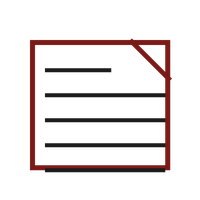
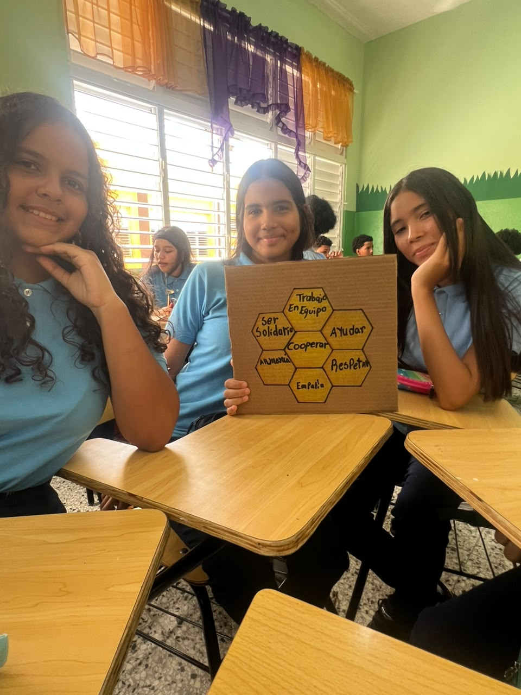
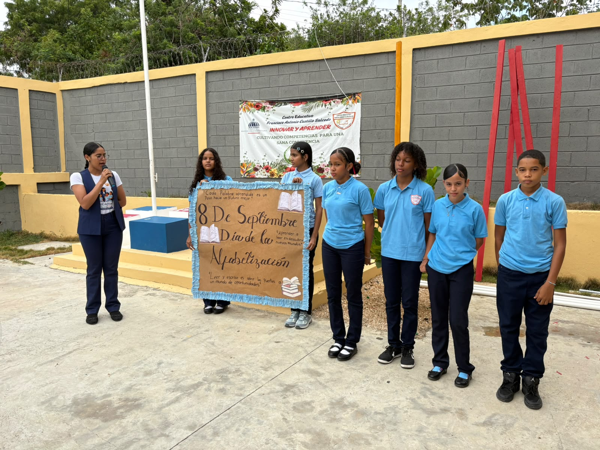
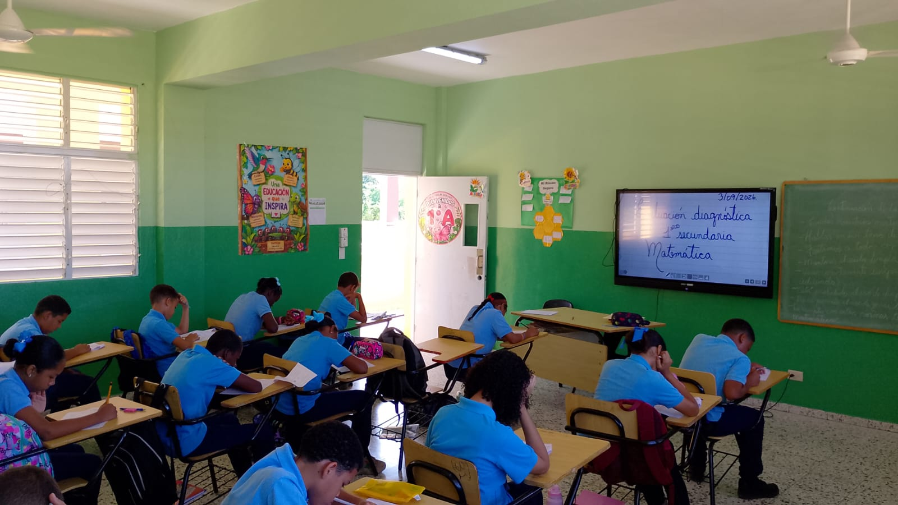
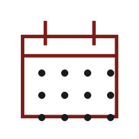

Efeméride
Efeméride
Día Mundial de la Alimentación
Una charla sobre alimentación saludable en la adolescencia recordó que comer bien también se aprende, y que empieza con la educación y el amor propio.
"Informando, educando e inspirando a nuestra comunidad"
Centro Educativo Francisco Antonio Castillo Salcedo
Con gran entusiasmo el Centro Educativo Francisco Antonio Castillo Salcedo recibió a toda su comunidad educativa para dar inicio al año escolar 2026-2027, bajo el lema "Construimos juntos un ambiente de empatía para convivir en armonía". El personal docente y administrativo compartió una jornada de bienvenida llena de color, alegría y compromiso renovado con la educación.
En esta primera edición presentamos las novedades del inicio de clases, la semana de ambientación, la evaluación diagnóstica, el simulacro nacional y la celebración del Día de la Alfabetización.

Noticias Escolares
Efeméride
Una charla sobre alimentación saludable en la adolescencia recordó que comer bien también se aprende, y que empieza con la educación y el amor propio.
 Efeméride
Efeméride
La paz no se aprende en un acto de un día, sino en la convivencia diaria. Estudiantes asumieron un pacto por la paz desde la escuela: el reto es que no se quede en la pancarta.
 Seguridad Escolar
Seguridad Escolar
La comunidad educativa participó activamente en el simulacro nacional, reforzando los protocolos de seguridad y las rutas de evacuación del plantel.

ComunidadEstudiantes y docentes participaron en dinámicas de integración y valores como el trabajo en equipo, la solidaridad y el respeto, preparando el ambiente de aula para el nuevo año.
El centro educativo dio la bienvenida a la comunidad escolar con una jornada especial de apertura, marcando el comienzo de un nuevo período lleno de metas y proyectos.

EfemérideEstudiantes conmemoraron el 8 de septiembre con un acto especial bajo el lema "Cada palabra aprendida es un paso hacia un futuro mejor", resaltando la importancia de la lectura y la escritura.

AcadémicoLos estudiantes de todos los niveles realizaron las pruebas diagnósticas correspondientes, permitiendo al equipo docente identificar fortalezas y áreas de refuerzo para el año.
 Efeméride
Efeméride
Con actividades lúdicas de literatura, los estudiantes conocieron a la poeta y educadora que abrió las aulas a la mujer dominicana, y aprendieron el valor de esta fecha.
 Cultura
Cultura
Gracias al Distrito Educativo 06-06, nuestros estudiantes llevaron su talento a Moca con una danza que celebra la tierra y la identidad mocana.

Calendario de EventosLos días subrayados tienen actividades según el Calendario Escolar 2026-2027 del MINERD.